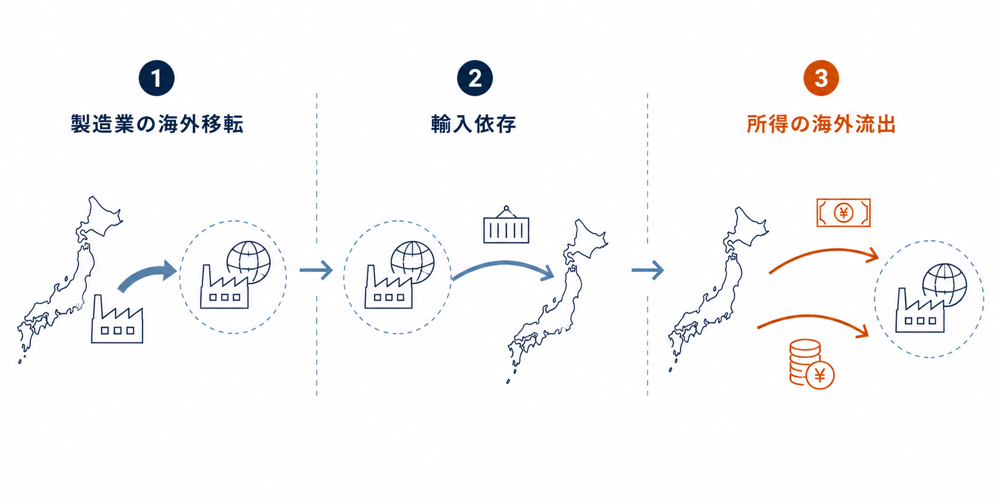
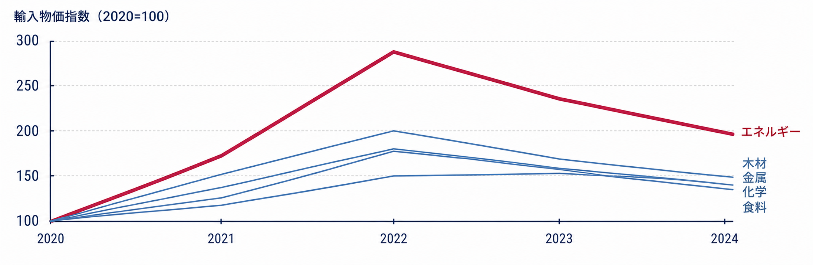
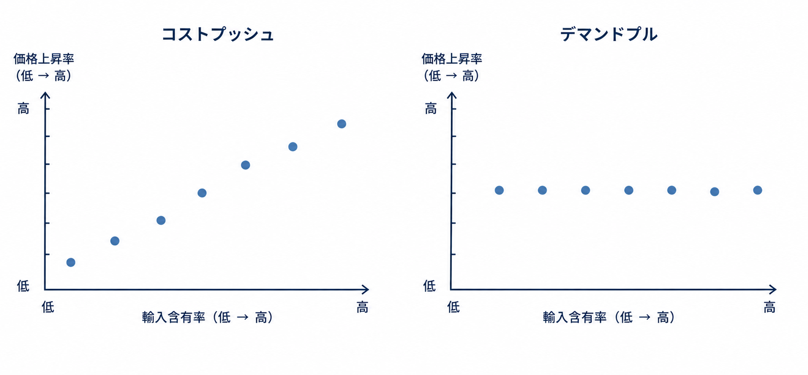
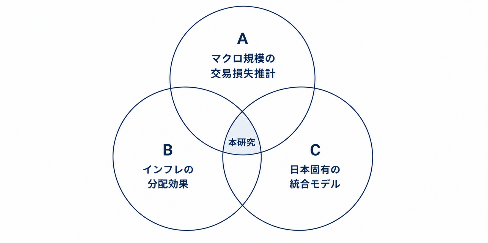
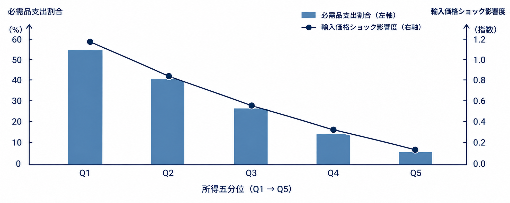
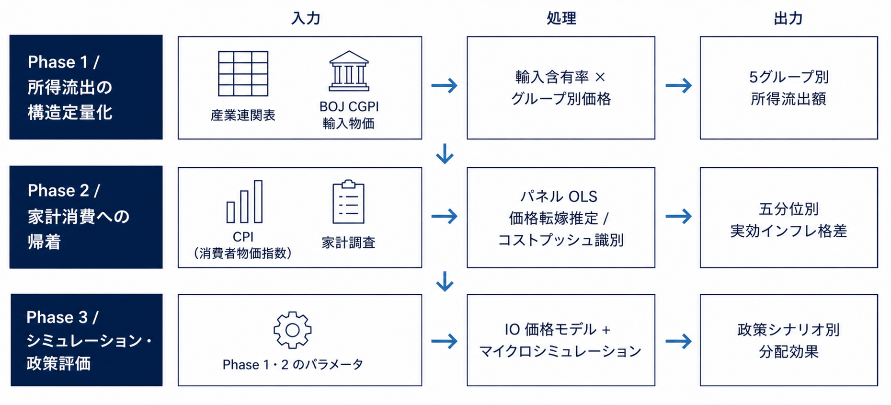

| グループ | 主な品目 | 2020→2022年 価格上昇率（目安） |
|---|---|---|
| エネルギー | 石油・天然ガス・石炭 | +213〜286% |
| 木材 | 丸太・製材・合板 | +100〜110% |
| 金属 | 銅・アルミ・鉄鋼 | +80〜100% |
| 化学 | 石油化学・プラスチック | +70〜90% |
| 食料 | 穀物・食用油脂・水産物 | +50〜64% |


docs/literature/ に 76 件整備済）。マクロの交易損失規模（齊藤2022）は推計されているが、どの財を通じ、どの所得階層に帰着するかの体系的な分解は行われていない。
実績CPIを使った分配分析はあるが、コストプッシュ成分のみを取り出した逆進性の定量化はされていない（デマンドプルが混入している）。
欧州ではIO×マイクロシミュレーションによる政策評価が普及しているが（Amores et al. 2025）、日本のデータを用いた同等のモデルが存在しない。

外的要因による輸入価格ショックは、日本の実質所得をどのような構造で海外に流出させ、財の特性および所得階層ごとに家計消費をどの程度押し下げているか。また、その構造に基づく政策介入はどのような分配効果をもたらすか。
低所得層（Q1）は食料・光熱などの必需品への支出割合が高い。
高所得層（Q5）は裁量的支出の割合が高い。
食料・エネルギーは輸入含有率が高く、
コストプッシュインフレの主要な経路となっている。
輸入含有率の財間差異を使えば、
コストプッシュ成分をデマンドプルから分離して推定できる。
コストプッシュインフレの実質消費への影響は
低所得層ほど大きく、逆進的な分配をもたらす


| データ | 出典 | 期間・粒度 | 主な用途 |
|---|---|---|---|
| 産業連関表（2020年表） | 総務省 | 2020年基準・約100部門 | 輸入含有率の算出 |
| CGPI 輸入物価指数 | 日本銀行 | 2015-2024・月次 | 5グループ別価格変化の計測 |
| 貿易統計（品目別） | 財務省 | 2015-2024・月次 | 輸入額・交易損失の算出 |
| 家計調査（五分位別） | 総務省 | 2015-2024・年次 | 所得階層別の支出構成 |
| 消費者物価指数 | 総務省 | 2015-2024・月次 | 費目別価格変動の把握 |
Amiti, M., Itskhoki, O. & Konings, J. (2019). International Shocks, Variable Markups, and Domestic Prices. Review of Economic Studies, 86(6).
Amores, A. F. et al. (2025). Inflation, Fiscal Policy, and Inequality: The Impact of the Post-Pandemic Price Surge and Fiscal Measures on European Households. Review of Income and Wealth, 71, e12713.
Fajgelbaum, P. D. et al. (2020). The Return to Protectionism. Quarterly Journal of Economics, 135(1).
Kohli, U. (2004). Real GDP, Real Domestic Income, and Terms-of-Trade Changes. Journal of International Economics, 62(1), 83–106.
Kohli, U. (2023). Trading Gains: Terms-of-Trade and Real Exchange Rate Effects. Review of Income and Wealth, 69(4), 857–882.
Minton, R. & Somale, M. (2025). Detecting Tariff Effects on Consumer Prices in Real Time. FEDS Notes, Federal Reserve Board.
Miwa, T. (2024). Issues Surrounding Japan's Balance of Payments and the Impact. Nomura Foundation Macro Economy Research Conference Paper.
O'Donoghue, C. et al. (2025). The Distributional Impact of Inflation in Pakistan: A Case Study of PRICES. International Journal of Microsimulation, 18(1).
Sasaki, Y., Yoshida, Y. & Otsubo, P. K. (2022). Exchange rate pass-through to Japanese prices: Import prices, producer prices, and the core CPI. Journal of International Money and Finance, 123.
Thorbecke, W. (2024). Investigating Japan's Machinery and Equipment Exports after the Global Financial Crisis. RIETI Discussion Paper Series 24-E-033.
Yagi, M. et al. (2022). Cost-push inflation and pass-through heterogeneity. Bank of Japan Working Paper.
齊藤誠（2022）「交易条件の悪化と賃上げ — Worsening of the Terms of Trade: How Should Wages and Profits Respond?」、日本経済研究センター コラム.